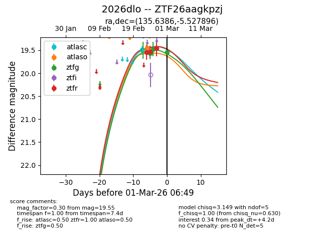
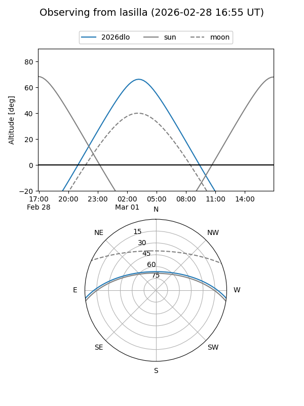
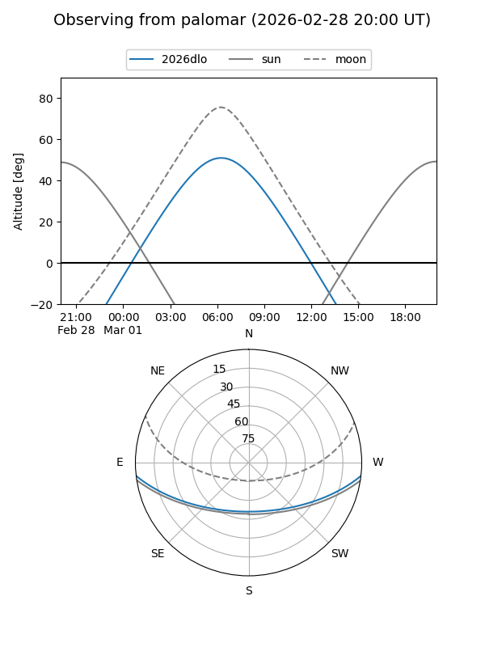
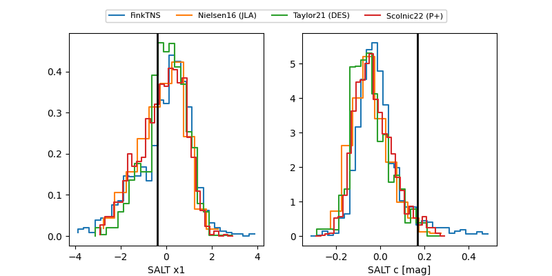

2026dlo
Target 2026dlo at 2026-03-01 06:51
Aliases and brokers:
FINK: link
Lasair: link
ALeRCE: link
TNS: link
YSE: link
alt names
ZTF26aagkpzj (ztf,fink_ztf)
2026dlo (tns,yse)
Coordinates:
equatorial (ra, dec) = 135.6386,-5.52790
equatorial (HMS+DMS) = 09:02:33.27,-05:31:40.42
galactic (l, b) = (234.5391,+25.82831)
Flags:
Photometry:
last atlasc=19.49, atlaso=19.45, ztfg=19.55, ztfr=19.46
1 atlasc, 1 atlaso, 3 ztfg, 3 ztfr detections
Lightcurve

Visibility


Additional plots
